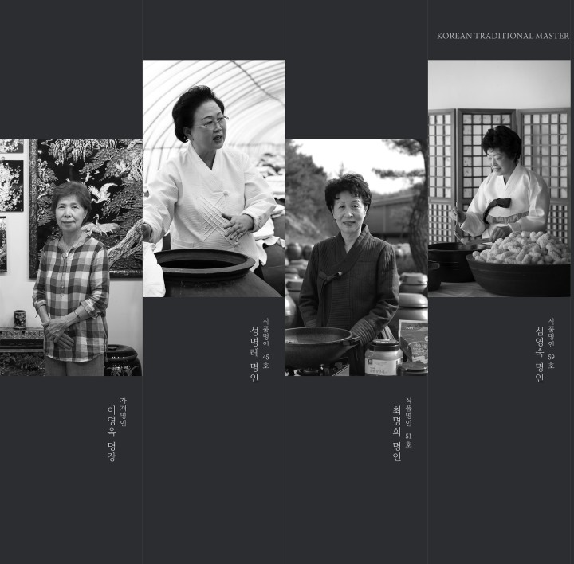

암소서울은 전국 곳곳의 무형문화재 식품 명인들과 함께 콜라보한 한식 다이닝 입니다.
대를 이어온 명인들의 지혜를 온전히 지켜내며 담아냈습니다.
암소서울은 'Korean Dining Studio'로 브랜드 대표 메뉴인 한우 '암소'와 지금의 한국다움을 가장 생생하게 품은 도시 '서울'의 합성어입니다.
암소서울의 메뉴는 선조들의 고서 중 조선시대에 남아있던 자료들로 완성하였습니다.
한양을 대표했던 음식 중에서도 미식을 즐기던 양반, 사대부 종가 가문들의 메뉴를 재현하면서 우리나라 최고 명인들의 자개, 장, 젓갈, 한과 등 조선을 대표했던 명주와 함께 만들었습니다.
더불어 전통과 현대가 공존하는 우리다운 한 상과 조화로운 주류들로 소중한 식사 시간을 더욱 의미있게 만들어보세요.